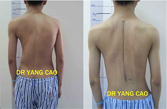
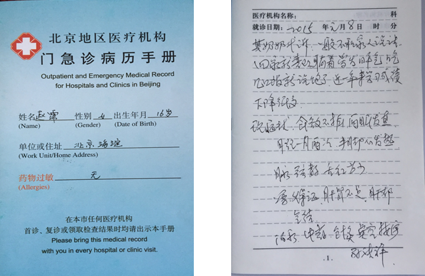
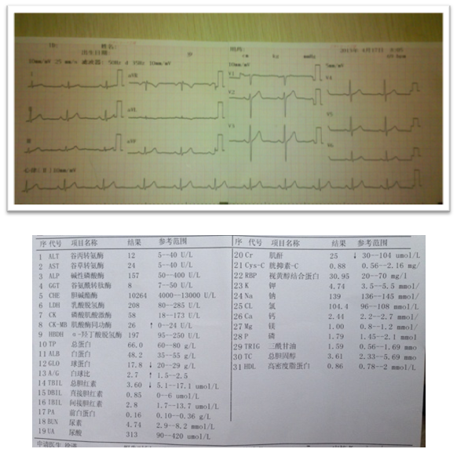

康复案例一
-
姓名：
赵霈
-
性别：
女
-
年龄：
16岁
-
地址：
北京海淀
2015年1月8日来本中心就诊，其奶奶代诉：一般不和家人说话，回家就爱躺着、爱发脾气、吃几口饭就说饱了，近一年来学习成绩下降很多。
现症状：食欲不振、两眼发直、月经一月两次、手脚心发热、脉弦数、舌红苔少。
2015年1月8日来本中心就诊，其奶奶代诉：一般不和家人说话，回家就爱躺着、爱发脾气、吃几口饭就说饱了，近一年来学习成绩下降很多。
现症状：食欲不振、两眼发直、月经一月两次、手脚心发热、脉弦数、舌红苔少。
诊断：燥症（肝肾不足、阴虚火旺）、肝郁气结。
治疗：中药、针灸、点穴、按摩
治疗结果:经一个月治疗后,病人精神明显恢复,食欲争强, 情绪平静,性格明显开朗.

2015年1月8日来本中心就诊，其奶奶代诉：一般不和家人说话，回家就爱躺着、爱发脾气、吃几口饭就说饱了，近一年来学习成绩下降很多。
现症状：食欲不振、两眼发直、月经一月两次、手脚心发热、脉弦数、舌红苔少。
诊断：燥症（肝肾不足、阴虚火旺）、肝郁气结。
治疗：中药、针灸、点穴、按摩
治疗结果:经一个月治疗后,病人精神明显恢复,食欲争强, 情绪平静,性格明显开朗.

患者自述：
大家好，我是赵霈，自从被诊断出得了脊柱侧弯，心情很不好，非常低落，不想跟人交流，诊断出得了脊柱侧弯，心情很不好，非常低落，不想跟人交流诊断出得了脊柱侧弯，心情很不好，非常低落，不想跟人交流诊断出得了脊柱侧弯，心情很不好，非常低落，不想跟人交流诊断出得了脊柱侧弯，心情很不好，非常低落，不想跟人交流诊断出得了脊柱侧弯，心情很不好，非常低落，不想跟人交流，后来在脊柱侧弯治疗之后，诶~~~完全康复了，没有打针，没有手术，医生服务态度非常好，感谢医院

 扫一扫 关注我们
扫一扫 关注我们